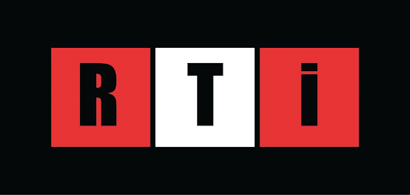
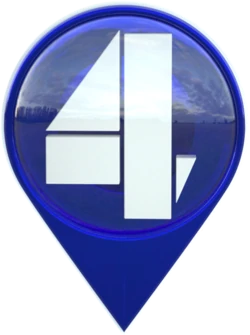
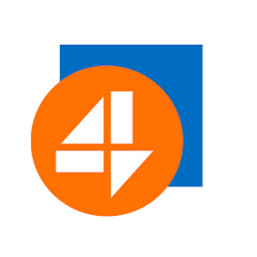

Четвертий канал
Геть чисто український

RTI - вільні люди
Розпочав мовлення у квітні 2014 року як Інтернет-радіостанція у форматі «Radiovision» (радіо в телевізійному етері).

4 канал - там, де ти
Після зміни власності 26 березня 2018 телеканал провів ребрендинг в інформаційний «4 канал»

4 канал - геть чисто український
Найкраща робота в світі
YouTube video
Новинний сюжет
За донат
- Тривалість: до 5 хв
- Час виробництва: доба
- Ротація в ефірі: тиждень
Інтерв'ю
За великий донат
- Тривалість: до 30 хв
- Час виробництва: 2 доби
- Ротація в ефірі: тиждень
Документальний фільм
За донатище
- Тривалість: до 60 хв
- Час виробництва: тиждень
- Ротація в ефірі: місяць